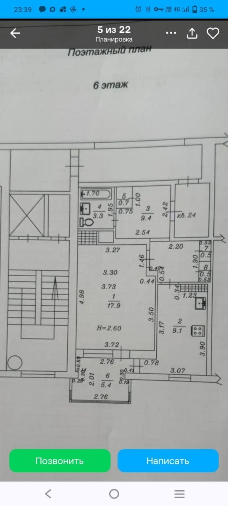

Обмер и конструкции
Уточнить контур, проёмы, высоту, простенки балкона и конструктивную схему. Тонкая линия на фото сама по себе не разрешает снос.
КВАРТИРА ЕЛЕНЫ · ПЛАНИРОВОЧНОЕ ИССЛЕДОВАНИЕ
Больше пространства для того, что важно вам.
Пять сценариев с мебелью, хранением и тёплым балконом.
6-й этаж · высота 2,60 м
Концепции по фото, до обмера
Несущие стены не меняем. По фотографии нельзя надёжно определить их статус. Снос существующих стен не предусмотрен; новые перегородки показаны отдельно. Балкон считаем тёплым по вашим данным, сохраняя простенки и существующий проход.
НЕ ПЯТЬ СТИЛЕЙ — ПЯТЬ РАЗНЫХ СЦЕНАРИЕВ
Выберите главное: свободный пол, личная спальня, хранение, семья или работа.
| Вариант | Для кого | Главное преимущество | Компромисс |
|---|
ИСХОДНЫЕ ДАННЫЕ
Контур восстановлен по присланному поэтажному плану. Размеры мебели заданы для сравнения, геометрия стен приблизительная: перспективное искажение фотографии не позволяет сделать рабочий чертёж.
Площади переписаны с фото, не рассчитаны по 3D. № 3 трактуем как прихожую и коридор; северную смежную зону с надписью «кв. 24» не включаем в квартиру. Длину балкона, форму кухонной ниши, расположение входного проёма и границы встроенных ниш необходимо уточнить.
Открыть исходное фото ↗
01 / ИСХОДНЫЙ ПЛАНПЕРЕД РЕАЛИЗАЦИЕЙ
Уточнить контур, проёмы, высоту, простенки балкона и конструктивную схему. Тонкая линия на фото сама по себе не разрешает снос.
Проверить вентиляцию зон за стеклом, тип плиты, стояки и подводы к стиральной машине. Кухня и санузел остаются на исходных местах.
Проверить открывание дверей и техники, проходы после отделки, раскладывание мебели. Семейный сценарий не считаем двухкомнатной квартирой.